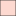

<!doctype html>
<html lang="en">
    <head>
        <meta charset="utf-8">
        <meta http-equiv="X-UA-Compatible" content="IE=edge">
        <meta name="viewport" content="initial-scale=1,user-scalable=no,maximum-scale=1,width=device-width">
        <meta name="mobile-web-app-capable" content="yes">
        <meta name="apple-mobile-web-app-capable" content="yes">
        <link rel="stylesheet" href="css/leaflet.css">
        <link rel="stylesheet" href="css/qgis2web.css"><link rel="stylesheet" href="css/fontawesome-all.min.css">
        <style>
        #map {
            width: 1249px;
            height: 775px;
        }
        </style>
        <title></title>
    </head>
    <body>
        <div id="map">
        </div>
        <script src="js/qgis2web_expressions.js"></script>
        <script src="js/leaflet.js"></script>
        <script src="js/leaflet.rotatedMarker.js"></script>
        <script src="js/leaflet.pattern.js"></script>
        <script src="js/leaflet-hash.js"></script>
        <script src="js/Autolinker.min.js"></script>
        <script src="js/rbush.min.js"></script>
        <script src="js/labelgun.min.js"></script>
        <script src="js/labels.js"></script>
        <script src="data/Perimetro_1.js"></script>
        <script src="data/Lotes_2.js"></script>
        <script src="data/Canales_3.js"></script>
        <script src="data/Cables_4.js"></script>
        <script>
        var highlightLayer;
        function highlightFeature(e) {
            highlightLayer = e.target;

            if (e.target.feature.geometry.type === 'LineString') {
              highlightLayer.setStyle({
                color: '#ffff00',
              });
            } else {
              highlightLayer.setStyle({
                fillColor: '#ffff00',
                fillOpacity: 1
              });
            }
        }
        var map = L.map('map', {
            zoomControl:true, maxZoom:26, minZoom:8
        }).fitBounds([[9.610192025035179,-82.84759797821692],[9.625845979648187,-82.8223450915385]]);
        var hash = new L.Hash(map);
        map.attributionControl.setPrefix('<a href="https://github.com/tomchadwin/qgis2web" target="_blank">qgis2web</a> &middot; <a href="https://leafletjs.com" title="A JS library for interactive maps">Leaflet</a> &middot; <a href="https://qgis.org">QGIS</a>');
        var autolinker = new Autolinker({truncate: {length: 30, location: 'smart'}});
        var bounds_group = new L.featureGroup([]);
        function setBounds() {
        }
        map.createPane('pane_ESRISatellite_0');
        map.getPane('pane_ESRISatellite_0').style.zIndex = 400;
        var layer_ESRISatellite_0 = L.tileLayer('https://server.arcgisonline.com/ArcGIS/rest/services/World_Imagery/MapServer/tile/{z}/{y}/{x}', {
            pane: 'pane_ESRISatellite_0',
            opacity: 1.0,
            attribution: '',
            minZoom: 8,
            maxZoom: 26,
            minNativeZoom: 0,
            maxNativeZoom: 20
        });
        layer_ESRISatellite_0;
        map.addLayer(layer_ESRISatellite_0);
        function pop_Perimetro_1(feature, layer) {
            layer.on({
                mouseout: function(e) {
                    for (i in e.target._eventParents) {
                        e.target._eventParents[i].resetStyle(e.target);
                    }
                },
                mouseover: highlightFeature,
            });
            var popupContent = '<table>\
                    <tr>\
                        <th scope="row">FINCA</th>\
                        <td>' + (feature.properties['FINCA'] !== null ? autolinker.link(feature.properties['FINCA'].toLocaleString()) : '') + '</td>\
                    </tr>\
                    <tr>\
                        <th scope="row">AREA_ha</th>\
                        <td>' + (feature.properties['AREA_ha'] !== null ? autolinker.link(feature.properties['AREA_ha'].toLocaleString()) : '') + '</td>\
                    </tr>\
                </table>';
            layer.bindPopup(popupContent, {maxHeight: 400});
        }

        function style_Perimetro_1_0() {
            return {
                pane: 'pane_Perimetro_1',
                opacity: 1,
                color: 'rgba(255,127,0,1.0)',
                dashArray: '',
                lineCap: 'square',
                lineJoin: 'bevel',
                weight: 4.0,
                fillOpacity: 0,
                interactive: true,
            }
        }
        map.createPane('pane_Perimetro_1');
        map.getPane('pane_Perimetro_1').style.zIndex = 401;
        map.getPane('pane_Perimetro_1').style['mix-blend-mode'] = 'normal';
        var layer_Perimetro_1 = new L.geoJson(json_Perimetro_1, {
            attribution: '',
            interactive: true,
            dataVar: 'json_Perimetro_1',
            layerName: 'layer_Perimetro_1',
            pane: 'pane_Perimetro_1',
            onEachFeature: pop_Perimetro_1,
            style: style_Perimetro_1_0,
        });
        bounds_group.addLayer(layer_Perimetro_1);
        map.addLayer(layer_Perimetro_1);
        function pop_Lotes_2(feature, layer) {
            layer.on({
                mouseout: function(e) {
                    for (i in e.target._eventParents) {
                        e.target._eventParents[i].resetStyle(e.target);
                    }
                },
                mouseover: highlightFeature,
            });
            var popupContent = '<table>\
                    <tr>\
                        <td colspan="2">' + (feature.properties['Id'] !== null ? autolinker.link(feature.properties['Id'].toLocaleString()) : '') + '</td>\
                    </tr>\
                    <tr>\
                        <th scope="row">CABLE</th>\
                        <td>' + (feature.properties['CABLE'] !== null ? autolinker.link(feature.properties['CABLE'].toLocaleString()) : '') + '</td>\
                    </tr>\
                    <tr>\
                        <th scope="row">VARIEDAD</th>\
                        <td>' + (feature.properties['VARIEDAD'] !== null ? autolinker.link(feature.properties['VARIEDAD'].toLocaleString()) : '') + '</td>\
                    </tr>\
                    <tr>\
                        <th scope="row">AREA_ha</th>\
                        <td>' + (feature.properties['AREA_ha'] !== null ? autolinker.link(feature.properties['AREA_ha'].toLocaleString()) : '') + '</td>\
                    </tr>\
                </table>';
            layer.bindPopup(popupContent, {maxHeight: 400});
        }

        function style_Lotes_2_0() {
            return {
                pane: 'pane_Lotes_2',
                opacity: 1,
                color: 'rgba(35,35,35,1.0)',
                dashArray: '',
                lineCap: 'butt',
                lineJoin: 'miter',
                weight: 1.0, 
                fill: true,
                fillOpacity: 1,
                fillColor: 'rgba(251,194,176,1.0)',
                interactive: true,
            }
        }
        map.createPane('pane_Lotes_2');
        map.getPane('pane_Lotes_2').style.zIndex = 402;
        map.getPane('pane_Lotes_2').style['mix-blend-mode'] = 'normal';
        var layer_Lotes_2 = new L.geoJson(json_Lotes_2, {
            attribution: '',
            interactive: true,
            dataVar: 'json_Lotes_2',
            layerName: 'layer_Lotes_2',
            pane: 'pane_Lotes_2',
            onEachFeature: pop_Lotes_2,
            style: style_Lotes_2_0,
        });
        bounds_group.addLayer(layer_Lotes_2);
        map.addLayer(layer_Lotes_2);
        function pop_Canales_3(feature, layer) {
            layer.on({
                mouseout: function(e) {
                    for (i in e.target._eventParents) {
                        e.target._eventParents[i].resetStyle(e.target);
                    }
                },
                mouseover: highlightFeature,
            });
            var popupContent = '<table>\
                    <tr>\
                        <td colspan="2">' + (feature.properties['Id'] !== null ? autolinker.link(feature.properties['Id'].toLocaleString()) : '') + '</td>\
                    </tr>\
                    <tr>\
                        <th scope="row">LONG_m</th>\
                        <td>' + (feature.properties['LONG_m'] !== null ? autolinker.link(feature.properties['LONG_m'].toLocaleString()) : '') + '</td>\
                    </tr>\
                </table>';
            layer.bindPopup(popupContent, {maxHeight: 400});
        }

        function style_Canales_3_0() {
            return {
                pane: 'pane_Canales_3',
                opacity: 1,
                color: 'rgba(72,123,182,1.0)',
                dashArray: '',
                lineCap: 'square',
                lineJoin: 'bevel',
                weight: 3.0,
                fillOpacity: 0,
                interactive: true,
            }
        }
        map.createPane('pane_Canales_3');
        map.getPane('pane_Canales_3').style.zIndex = 403;
        map.getPane('pane_Canales_3').style['mix-blend-mode'] = 'normal';
        var layer_Canales_3 = new L.geoJson(json_Canales_3, {
            attribution: '',
            interactive: true,
            dataVar: 'json_Canales_3',
            layerName: 'layer_Canales_3',
            pane: 'pane_Canales_3',
            onEachFeature: pop_Canales_3,
            style: style_Canales_3_0,
        });
        bounds_group.addLayer(layer_Canales_3);
        map.addLayer(layer_Canales_3);
        function pop_Cables_4(feature, layer) {
            layer.on({
                mouseout: function(e) {
                    for (i in e.target._eventParents) {
                        e.target._eventParents[i].resetStyle(e.target);
                    }
                },
                mouseover: highlightFeature,
            });
            var popupContent = '<table>\
                    <tr>\
                        <td colspan="2">' + (feature.properties['Id'] !== null ? autolinker.link(feature.properties['Id'].toLocaleString()) : '') + '</td>\
                    </tr>\
                    <tr>\
                        <th scope="row">LONG_m</th>\
                        <td>' + (feature.properties['LONG_m'] !== null ? autolinker.link(feature.properties['LONG_m'].toLocaleString()) : '') + '</td>\
                    </tr>\
                </table>';
            layer.bindPopup(popupContent, {maxHeight: 400});
        }

        function style_Cables_4_0() {
            return {
                pane: 'pane_Cables_4',
                opacity: 1,
                color: 'rgba(229,28,2,1.0)',
                dashArray: '',
                lineCap: 'round',
                lineJoin: 'round',
                weight: 4.0,
                fillOpacity: 0,
                interactive: true,
            }
        }
        map.createPane('pane_Cables_4');
        map.getPane('pane_Cables_4').style.zIndex = 404;
        map.getPane('pane_Cables_4').style['mix-blend-mode'] = 'normal';
        var layer_Cables_4 = new L.geoJson(json_Cables_4, {
            attribution: '',
            interactive: true,
            dataVar: 'json_Cables_4',
            layerName: 'layer_Cables_4',
            pane: 'pane_Cables_4',
            onEachFeature: pop_Cables_4,
            style: style_Cables_4_0,
        });
        bounds_group.addLayer(layer_Cables_4);
        map.addLayer(layer_Cables_4);
        var baseMaps = {};
        L.control.layers(baseMaps,{' Cables': layer_Cables_4,' Canales': layer_Canales_3,' Lotes': layer_Lotes_2,' Perimetro': layer_Perimetro_1,"ESRI Satellite": layer_ESRISatellite_0,},{collapsed:false}).addTo(map);
        setBounds();
        </script>
    </body>
</html>
